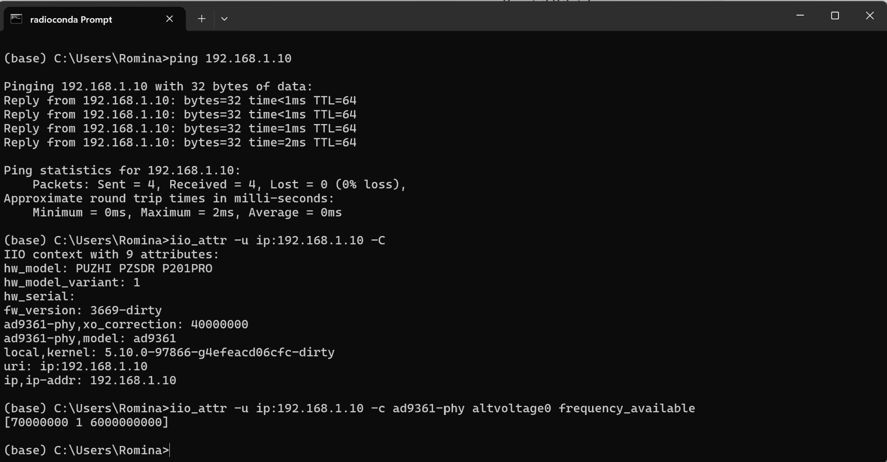
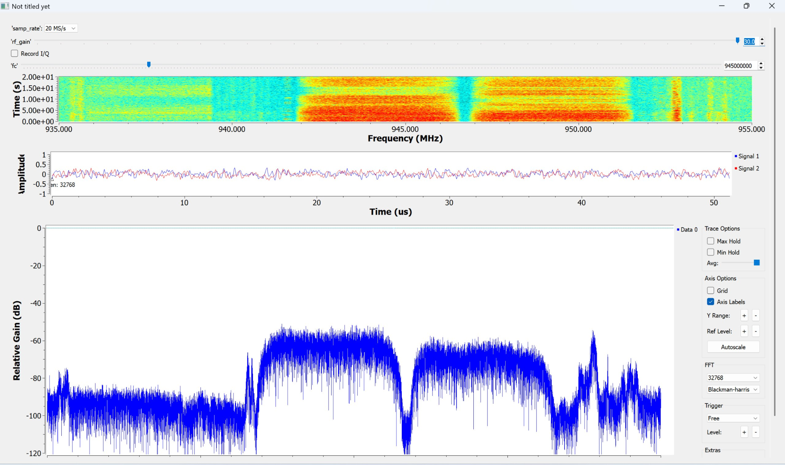
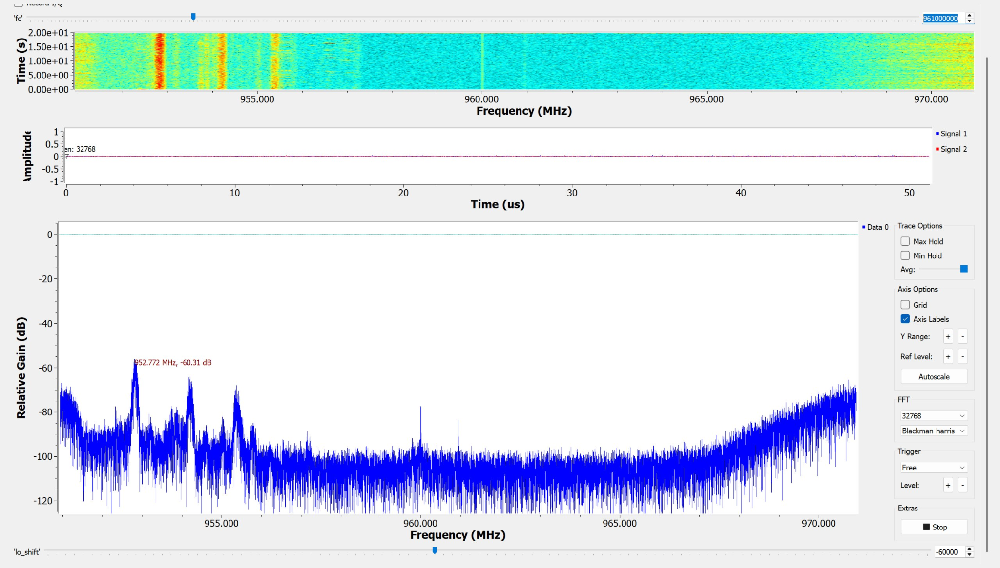
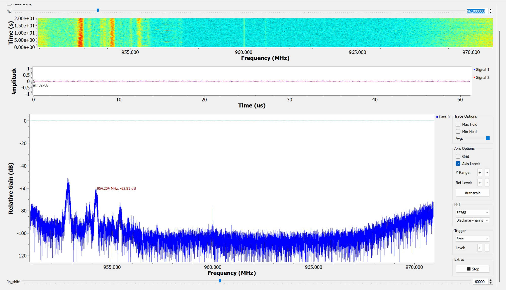
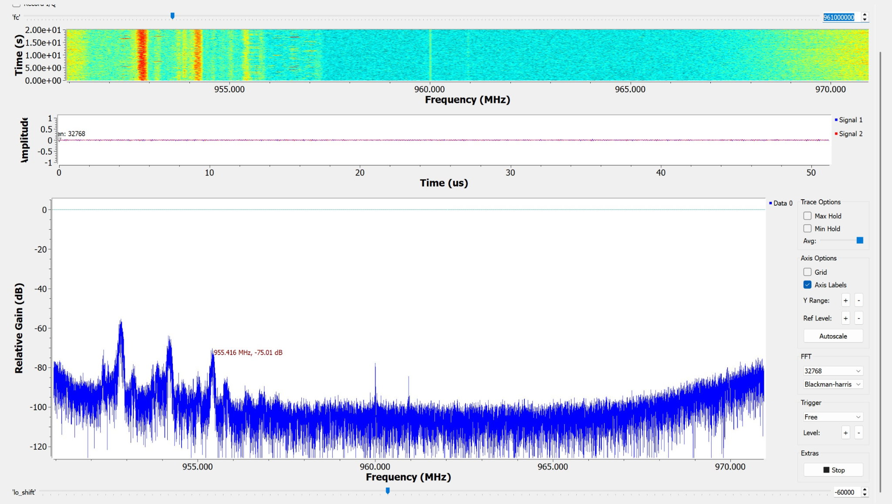

هدف و محدودهٔ گزارش. در این بخش، اتصال و شناسایی دستگاه، ساخت فلوگراف، بازخوانی تنظیمات، دریافت طیف، انتخاب بهره، آزمون محور فرکانس و آزمون ضبط را انجام دادیم. پاسخ دو پرسش با استفاده از هشت تصویر اصلی، دو دور قرائت حاملها و حجم فایل ضبطشده ارائه شده است.
اتصال و شناسایی دستگاه
آنتن دریافت را به RX1 بستیم؛ دادهها از کابل LAN منتقل شدند و کابل USB تغذیه را تأمین کرد. در این بخش ارسال انجام نشد و TX1 خالی ماند. فرمانهای شناسایی را در Radioconda Prompt اجرا کردیم. شکل ۱ چهار پاسخ پینگ، صفر درصد اتلاف بسته و زمان رفتوبرگشت گزارششدهٔ صفر تا دو میلیثانیه را نشان میدهد.
| مقدار ثبتشده | مورد |
|---|---|
PUZHI PZSDR P201PRO |
مدل سختافزار |
ad9361 |
مدل گزارششدهٔ تراشه |
3669-dirty |
رشتهٔ نسخهٔ سفتافزار |
[70000000 1 6000000000] |
بازهٔ RX LO؛ از 70 MHz تا 6 GHz |
ip:192.168.1.10 |
نشانی اتصال |
| فیلد بازگشتی خالی است. | شمارهٔ سریال hw_serial |

نتیجهٔ اجرا. ارتباط شبکه و شناسایی نرمافزاری موفق بود. مدل، سفتافزار و بازهٔ واقعی گزارششده را ثبت کردیم؛ فرکانسهای ۹۴۵ و ۹۴۷ مگاهرتز در این بازه قرار دارند.
ساخت و اجرای فلوگراف پایش
فلوگراف lab01_monitor.grc را ساختیم و اجرا کردیم.
خروجی مختلط PlutoSDR Source را به نمایشگرهای فرکانس، آبشار و زمان متصل کردیم.
همین خروجی به شاخهٔ ضبط SDR Lab IQ Recorder نیز داده شد. شکل ۲ اتصالها، کنترلها و تنظیمات اولیه را نشان میدهد.

| تنظیم انجامشده | بلوک یا کنترل |
|---|---|
| خروجی Python و رابط QT GUI | تنظیمات اصلی |
uri = "ip:192.168.1.10" f_tune = int(fc + lo_shift) |
اتصال و فرکانس |
| مرکز 945 MHz؛ نرخ 2.6 MS/s؛ بهرهٔ دستی 20 dB؛ جابهجایی LO صفر | گیرنده در آغاز |
| گزینههای 2.6، 5، 10 و 20 MS/s | انتخاب نرخ نمونهبرداری |
| بهره از صفر تا 30 dB؛ جابهجایی LO از -500 تا +500 kHz | محدودهٔ کنترلها |
| Filter Configuration = Off؛ پهنای باند RF برابر 20 MHz؛ تصحیحهای I/Q و DC فعال | فیلتر و تصحیحها |
مرکز برابر f_tune و عرض برابر samp_rate؛ طول اولیهٔ FFT برابر 1024 |
نمایشگرها |
پارامترهای تیم، آزمایش، فرکانس، نرخ و بهره؛ پوشهٔ recordings و کلید ضبط |
شاخهٔ ضبط |
نتیجهٔ اجرا. فلوگراف و شاخهٔ ضبط را پیادهسازی کردیم. به دلیل تعیین نرخ جریان توسط سختافزار، بلوک Throttle اضافه نشد. گزینهٔ ضبط در تصویرِ تنظیم اولیه خاموش است؛ آزمون عملی ضبط پس از این مرحله انجام شد و در بخش ۱۰ آمده است.
بازخوانی تنظیمات واقعی گیرنده
پس از اجرای فلوگراف، طبق دستورکار به مقادیر واردشده در GRC اکتفا نکردیم: با iio_attr فرکانس نوسانساز گیرنده، نرخ نمونهبرداری، پهنای باند RF، حالت کنترل بهره و بهرهٔ سختافزار را از خود دستگاه خواندیم. شکل ۳ خروجی واقعی این فرمانهاست.

| نتیجه | بازخوانی | درخواست | پارامتر |
|---|---|---|---|
| مطابق | 945000000 Hz |
945 MHz | فرکانس RX LO |
| مطابق | 2600000 S/s |
2.6 MS/s | نرخ نمونهبرداری |
| مطابق | 20000000 Hz |
20 MHz | پهنای باند RF |
| مطابق | manual |
Manual | کنترل بهره |
| مطابق | 20.000000 dB |
20 dB | بهرهٔ سختافزاری |
برای دیدن ستونهای دیگر، جدول را افقی پیمایش کنید.
تفسیر بازخوانی
هر پنج مقدار با تنظیم اولیه تطبیق دارند. بهویژه، پهنای باند 20 MHz واقعاً روی دستگاه اعمال شده است؛ بنابراین تنظیم Filter Configuration = Off با بازخوانی سختافزاری نیز بررسی شد. پهنای باند فیلتر RF با نرخ جریان خروجی یکسان نیست؛ تنظیم 20 MHz فیلتر میتواند همراه با نرخ اولیهٔ 2.6 MS/s استفاده شود. در این وضعیت، گسترهٔ اسمی نمونههای مختلط برابر است با این تصویر به وضعیت اولیهٔ 2.6 MS/s و 20 dB مربوط است. در مرحلهٔ بعد، نرخ و بهره را به 20 MS/s و 30 dB تغییر دادیم.
نتیجهٔ اجرا. همهٔ پارامترهای خواستهشده را از دستگاه خواندیم و مقایسه کردیم؛ هر پنج بررسی در وضعیت ثبتشده موفق بودند.
نخستین طیف و انتخاب بهرهٔ کاری در ۹۴۵ مگاهرتز
پس از راهاندازی اولیه، نرخ را به 20 MS/s افزایش دادیم و کنترل بهرهٔ دستی را در محدودهٔ مجاز بررسی کردیم. برای نمای ذخیرهشده، بهرهٔ 30 dB انتخاب شد. شکل ۴ آبشار، شکل موج I/Q و طیف را همزمان نشان میدهد.

| مقدار یا مشاهده | مورد |
|---|---|
945000000 هرتز |
کنترل فرکانس مرکز |
| 20 MS/s؛ بازهٔ اسمی تقریباً ۹۳۵ تا ۹۵۵ مگاهرتز | نرخ و گسترهٔ نما |
| 30 dB، در سقف مجاز حالت آنتن | بهرهٔ کاری |
| طول 32768 و پنجرهٔ Blackman–Harris | تنظیم زندهٔ FFT |
| در قاب نمایشدادهشده، مؤلفهها تقریباً در محدودهٔ قرار دارند؛ کمتر از معیار حدود | دامنهٔ I/Q |
| نواحی اشغالشدهٔ پهن و چند ویژگی باریکتر بالاتر از کف اطراف دیده میشوند | طیف و آبشار |
تحلیل مشاهده
تطابق نواحی اشغالشده در طیف و آبشار، دریافت زنده را نشان میدهد. در شکل موج این قاب، تختشدن آشکار قلهها دیده نمیشود و دامنه در محدودهٔ معیار دستورکار است. بر این اساس، 30 dB را بهرهٔ کاری نمای ثبتشده انتخاب کردیم. بلوکهای چندمگاهرتزی و قلههای باریکتر در باند ۹۰۰ مگاهرتز همزمان حضور دارند؛ این نمای کلی را «طیف دریافتی باند ۹۰۰ مگاهرتز» مینامیم. بررسی حاملهای منتخب در پاسخ پرسش دوم انجام شده است. محور عمودی نسبی است و به معنی توان ورودی کالیبرهشده بر حسب dBm نیست.
نتیجهٔ اجرا. نمایش زنده و انتخاب بهره را انجام دادیم؛ تصویر نرخ 20 MS/s و بهرهٔ کاری 30 dB را با دامنهٔ زمانی مناسب ثبت میکند.
آزمون محور فرکانس در ۹۴۷ مگاهرتز
طبق دستورکار، کنترل فرکانس مرکز را از ۹۴۵ به ۹۴۷ مگاهرتز تغییر دادیم. شکل ۵ مقدار fc = 947000000 و lo_shift = 0 را ثبت میکند. این نمای تقریباً ۲۰ مگاهرتزی را با شکل ۴ مقایسه کردیم.

| نمای ۹۴۷ | نمای ۹۴۵ | کمیت |
|---|---|---|
| 947 MHz | 945 MHz | فرکانس مرکز |
| 937–957 MHz | 935–955 MHz | بازهٔ اسمی با عرض 20 MHz |
| مکان باند پایهٔ یک ویژگی مشترک | ||
| کاهش 2 MHz | مبنای مقایسه | تغییر مکان باند پایه |
| تقریباً همان مقادیر RF | نواحی مشترک مرجع | رفتار برچسبها |
اصل آزمون و نتیجه
رابطهٔ برچسب فرکانس با فرکانس باند پایه چنین است: با افزایش دو مگاهرتزی فرکانس تنظیم، مکان باند پایهٔ یک سیگنال ثابت دو مگاهرتز کاهش مییابد؛ پس مجموع این دو و در نتیجه برچسب RF ثابت میماند. در تصاویر، نواحی پهن نزدیک حدود ۹۴۲ تا ۹۴۶ و ۹۴۷ تا ۹۵۱ مگاهرتز مکان RF خود را در حد دقت خواندن نمای کلی حفظ کردهاند. ملاک این آزمون مکان فرکانسی بود؛ تغییرات لحظهای ارتفاع طیف مبنای آن نیست.
نتیجهٔ اجرا. آزمون تغییر مرکز به ۹۴۷ مگاهرتز و مقایسه با مرجع ۹۴۵ را انجام دادیم. نتیجهٔ کیفی با رفتار مورد انتظار محور RF سازگار است.
پاسخ پرسش اول: لبههای نما و گام پویش
صورت پرسش. لبههای بازهٔ نمایش چه تفاوتی با میانه دارند؟ چه کسری از قابل اعتماد است و این کسر چه ارتباطی با گام پویش رابطهٔ ۲ دارد؟
پاسخ فرکانسی لبهها و ناحیهٔ قابل اعتماد
گسترهٔ اسمی دوطرفهٔ نمونههای مختلط برابر است. فیلترهای گیرنده در نزدیکی لبهها ناحیهٔ گذار دارند؛ پاسخ دامنه در این قسمتها به اندازهٔ میانه تخت نیست. سیگنال نزدیک لبه ممکن است تضعیف شود یا شکل طیف آن تغییر کند. بنابراین، کل پهنای قابل مشاهده را به یک اندازه معتبر در نظر نمیگیریم. مطابق قاعدهٔ تقریبی دستورکار، ۸۰ درصد میانی را نگه میداریم و در هر طرف حدود را کنار میگذاریم: این یک معیار عملی دستورکار است و به معنی اندازهگیری مستقل تختی فیلتر دستگاه نیست.
| عرض معتبر | بازهٔ معتبر (MHz) | بازهٔ اسمی (MHz) | مرکز و نرخ |
|---|---|---|---|
| 2.08 MHz | 943.96–946.04 | 943.70–946.30 | 945 MHz / 2.6 MS/s |
| 16 MHz | 937–953 | 935–955 | 945 MHz / 20 MS/s |
| 16 MHz | 939–955 | 937–957 | 947 MHz / 20 MS/s |
برای دیدن ستونهای دیگر، جدول را افقی پیمایش کنید.
ارتباط با گام پویش
برای اتصال بازههای میانی معتبرِ نماهای متوالی، فاصلهٔ مراکز را برابر میگیریم. در این حالت، نماهای اسمی به اندازهٔ همپوشانی دارند و قسمتهای میانی نگهداشتهشده بدون شکاف به هم میرسند. در نرخ 20 MS/s، گام پویش ۱۶ مگاهرتز، همپوشانی اسمی ۴ مگاهرتز و حاشیهٔ کنارگذاشتهشده در هر انتها ۲ مگاهرتز است. برای شروع باند از ، رابطهٔ ۲ دستورکار میدهد:
فاصلهٔ بین بینهای FFT
فاصلهٔ فرکانسی بین دو بین برابر است. طول اولیهٔ فلوگراف 1024 بود و کنترل FFT در نمای زنده به 32768 تغییر کرده است.
| نمای زنده | تنظیم اولیه | کمیت |
|---|---|---|
| 20 MS/s | 2.6 MS/s | نرخ نمونهبرداری |
| 32768 | 1024 | طول FFT |
| 610.35 Hz | 2539.06 Hz | فاصلهٔ |
نتیجهٔ اجرا. طبق معیار دستورکار، ناحیهٔ ۸۰ درصد میانی را برای تفسیر نما در نظر گرفتیم؛ در نرخ 20 MS/s، عرض معتبر و گام پویش هر دو ۱۶ مگاهرتز هستند.
پاسخ پرسش دوم: قرائت اول و شبکهٔ GSM900
صورت پرسش. مرکز سه حامل را بخوانید، با شبکهٔ مقایسه کنید، اختلاف را بر حسب کیلوهرتز و خطای فرکانس را بر حسب ppm به دست آورید و با جدول ۲ مقایسه کنید.
سه ویژگی باریک را برای مقایسه با شبکهٔ GSM900 انتخاب کردیم. در دور اول، مقادیر نشانگر در شکلهای ۶ تا ۸ بهعنوان برآورد تقریبی مرکز ثبت شدند. این تصاویر قرائت فرکانسی را نشان میدهند؛ تعیین دقیق مرکز و شناسایی فناوری صرفاً از یک نقطهٔ نشانگر نتیجه نمیشود.
روش مقایسه با شبکه
در روابط زیر، فرکانسهای داخل کسر بر حسب مگاهرتز هستند:
| اختلاف (kHz) | نامی (MHz) | شاخص | قرائت (MHz) | حامل |
|---|---|---|---|---|
| 952.800 | 89 | 952.772 | ۱ | |
| 954.200 | 96 | 954.204 | ۲ | |
| 955.400 | 102 | 955.416 | ۳ |
برای دیدن ستونهای دیگر، جدول را افقی پیمایش کنید.
برای نمونه، .

fc = 961000000، جابهجایی lo_shift = -60000 و طول FFT برابر 32768 است.بزرگنمایینتیجهٔ اجرا. سه فرکانس دور اول را ثبت و با نزدیکترین نقاط شبکهٔ ۲۰۰ کیلوهرتزی مقایسه کردیم؛ اختلافهای علامتدار برابر -28، +4 و +16 kHz شدند.
ادامهٔ شواهد تصویری قرائت اول
دو تصویر زیر، قرائت حاملهای دوم و سوم در دور اول را ثبت میکنند. اعداد فرکانس برای محاسبات استفاده شدهاند و اعداد dB سطح نسبیِ محل نشانگر هستند. هر سه عکس این مجموعه به دور اول مربوطاند؛ مقادیر دور دوم در جدولهای عددی بعدی جداگانه آمدهاند.


نتیجهٔ اجرا. هر سه تصویر اصلیِ دور اول و اعداد نشانگر آنها حفظ شدهاند. هیچ تصویر جدیدی برای دور دوم به گزارش اضافه نشده است.
پرسش دوم: قرائت دوم و محاسبهٔ دقیق خطا
برای بررسی تغییر قرائت، مقادیر دور دومِ همان سه حامل را بهترتیب 952.840، 954.196 و 955.380 MHz ثبت کردیم. مبنای استاندارد هر حامل همان نقاط دور اول است؛ از جایگزینی عدد اندازهگیریشده با فرکانس استاندارد خودداری کردیم.
| خطای دوم (kHz) | خطای اول (kHz) | فرکانس نامی | قرائت دوم | قرائت اول | حامل |
|---|---|---|---|---|---|
| 952.800 | 952.840 | 952.772 | ۱ | ||
| 954.200 | 954.196 | 954.204 | ۲ | ||
| 955.400 | 955.380 | 955.416 | ۳ |
برای دیدن ستونهای دیگر، جدول را افقی پیمایش کنید.
قرارداد علامت و تبدیل به ppm
خطا را «فرکانس خواندهشده منهای فرکانس نامی» تعریف میکنیم. مقدار منفی یعنی برچسب خواندهشده پایینتر از نقطهٔ استاندارد قرار گرفته است: در این نرمالسازی، صورت و مخرج باید واحد یکسان داشته باشند. برای حامل اول در دور دوم:
| مقایسه با مرجع | خطا (ppm) | اختلاف (kHz) | حامل و دور قرائت |
|---|---|---|---|
| کمی بیرون بازه | حامل ۱، دور اول | ||
| داخل بازه | حامل ۲، دور اول | ||
| داخل بازه | حامل ۳، دور اول | ||
| بیرون بازه | حامل ۱، دور دوم | ||
| داخل بازه | حامل ۲، دور دوم | ||
| داخل بازه | حامل ۳، دور دوم |
برای دیدن ستونهای دیگر، جدول را افقی پیمایش کنید.
مرجع در فرکانسهای نامیِ این سه حامل بهترتیب حدود ، و است. در هر دو دور، دو حامل داخل این مرجعاند و حامل اول بیرون آن قرار میگیرد. جدول ۲ یک مقدار نوعی آموزشی ارائه میکند؛ این مقایسه بهتنهایی آزمون مشخصهٔ قطعیِ واحد متصل نیست.
نتیجهٔ اجرا. محاسبات هر شش قرائت با حفظ علامت انجام شد. اختلافهای دور دوم +40، -4 و -20 kHz و خطاهای متناظر در جدول ثبت شدهاند.
تحلیل تکرارپذیری و برآورد خطای مرجع
میانگینها و پراکندگی دو دور
میانگین خطاهای ظاهری دور اول -2.8161 ppm و دور دوم +5.6186 ppm است. انحراف معیار نمونهای سه مقدار هر دور، بهترتیب 23.8521 و 32.5847 ppm به دست میآید. برای بررسی اثر تکرار، میانگین دو قرائتِ هر حامل را نیز حساب کردیم:
| اختلاف دو قرائت (kHz) | خطای میانگین (ppm) | اختلاف میانگین با نامی (kHz) | میانگین فرکانس (MHz) | حامل |
|---|---|---|---|---|
| 952.806 | ۱ | |||
| 954.200 | ۲ | |||
| 955.398 | ۳ |
برای دیدن ستونهای دیگر، جدول را افقی پیمایش کنید.
میانگین شش خطای نرمالشده، یا میانگین خطاهای سه فرکانس میانگین، برابر است با این عدد فقط میانگین ظاهری دادههای موجود است. نزدیکشدن میانگین به صفر، با وجود اختلاف قرائتهای علامتمخالف، کالیبراسیون دقیق دستگاه را ثابت نمیکند. یک خطای مشترک مرجع برای حاملهای نزدیک باید جابهجاییهای سازگارتری ایجاد کند؛ در این دادهها انتخاب محل نشانگر، تغییرات طیف و تعیین تقریبی مرکز در نتیجه مؤثرند. اختلافهای 68، 8 و 36 kHz شاخص تغییر مشاهدهشده بین دو قرائتاند و بهتنهایی عدمقطعیت استاندارد آماری محسوب نمیشوند.
نقش محل حامل اول در نمای دور اول
در سه تصویر دور اول: بازهٔ اسمی تقریباً 950.940–970.940 MHz و ۸۰ درصد میانی آن 952.940–968.940 MHz است. قرائت اولِ حامل ۱، یعنی 952.772 MHz، حدود 168 kHz پایینتر از ابتدای ناحیهٔ نگهداشتهشده است. این قرارگیری میتواند شکل طیف و خواندن مرکز را تحت تأثیر پاسخ لبه قرار دهد؛ بهتنهایی علت کل اختلاف را اثبات نمیکند. دو حامل دیگرِ دور اول داخل این ناحیهاند.
طبق مدل دستورکار، اگر اختلافهای دور اول را بر فرکانس تنظیم 960.940 MHz نرمال کنیم، بهترتیب -29.1381، +4.1626 و +16.6504 ppm به دست میآیند؛ نتیجهٔ مقایسه با تغییر نمیکند. برای مقایسهٔ یکسان دو دور در جدول ۱۰ از فرکانس نامی هر حامل استفاده شده است.
نتیجهٔ اجرا. پاسخ پرسش دوم، شامل مقادیر مستقل هر دو دور، برآورد عددی خطا، مقایسه با جدول ۲ و تحلیل پراکندگی است؛ تصحیح کالیبراسیون تأییدنشدهای به دستگاه نسبت داده نشده است.
آزمون ضبط؛ انجام بند ۱۰ دستورکار
بند ۱۰ دستورکار را انجام دادیم. نرخ نمونهبرداری را به 2.6 MS/s برگرداندیم، گزینهٔ Record I/Q را فعال کردیم و پس از حدود دو ثانیه برداشتیم. فایل خروجی ایجاد و ذخیره شد و حجم مشاهدهشدهٔ آن حدود 42 MB بود. این نتیجهٔ عملی، علاوه بر پیادهسازی شاخهٔ ضبط در شکل ۲، انجام آزمون ذخیرهٔ نمونههای خام را ثبت میکند.
مقایسهٔ حجم با رابطهٔ خواستهشده
در قالب complex float32، هر نمونهٔ مختلط از دو مؤلفهٔ float32 تشکیل میشود: ۴ بایت برای I و ۴ بایت برای Q؛ در نتیجه ۸ بایت برای هر نمونه. حجم نظریِ ضبط بدون سربرگ از رابطهٔ دستورکار به دست میآید: برای نرخ نمونه در ثانیه و مدت تقریبی :
| مقدار | کمیت |
|---|---|
| 2.6 MS/s | نرخ آزمون ضبط |
| مدت فعالبودن گزینهٔ ضبط | |
| 8 byte / complex sample | اندازهٔ نمونه در قالب cf32 |
| 41,600,000 byte = 41.6 MB | حجم نظری |
| حجم مشاهدهشدهٔ فایل | |
| تفاوت با مقدار نظری، با فرض نمایش دهدهی حجم | |
| نسبت تفاوت به حجم نظری |
تفسیر نتیجهٔ آزمون
با استفاده از مقدار گردشدهٔ حجم، اختلاف نسبی اسمی برابر است با این تفاوت کوچک با زمانگیری تقریبیِ دو ثانیه و گردشدن نمایش حجم سازگار است. خود مقدار نظریِ 41.6 MB نیز با گردکردن به مگابایت کامل، 42 MB نمایش داده میشود؛ بنابراین اختلاف بالا را نباید بهتنهایی خطای ضبط یا گمشدن نمونهها تعبیر کرد. در این محاسبات، MB برابر بایت در نظر گرفته شده است. تعداد دقیق بایت یا مدت دقیق ضبط از عدد گردشدهٔ 42 MB نتیجه نمیشود.
الگوی استاندارد نامگذاریِ فایل ضبط در دستورکار به شکل زیر است:
teamID_lab01_fc_fs_gain_timestamp.cf32
شاخهٔ ضبط در پوشهٔ recordings پیکربندی شده و اطلاعات آزمایش، تیم و تنظیمهای دریافت را برای نامگذاری دریافت میکند.
نتیجهٔ اجرا. آزمون ضبط عملاً انجام شد، فایل با حجم حدود 42 MB تشکیل شد و مقایسه با رابطهٔ سازگاری آن را با حدود دو ثانیه نمونهبرداری در 2.6 MS/s نشان داد.
جمعبندی اجرای بخش اول
مراحل مستند بخش اول را انجام دادیم و نتایج شناسایی، تنظیم و دریافت را همراه با پاسخ دو پرسش و آزمون ضبط ثبت کردیم. جدول زیر ارتباط هر فعالیت با نتیجهٔ آن را خلاصه میکند.
| کار انجامشده و نتیجه | فعالیت |
|---|---|
| آنتن روی RX1؛ پینگ و شناسایی IIO موفق؛ مشخصات و بازه ثبت شد؛ شکل ۱ | اتصال و شناسایی |
| منبع، سه نمایشگر، کنترلها و شاخهٔ ضبط ساخته و متصل شدند؛ شکل ۲ | فلوگراف پایش |
| هر پنج پارامترِ خواستهشده با مقدار اولیه تطبیق داشتند؛ شکل ۳ | بازخوانی دستگاه |
| طیف و آبشار زنده و مؤلفههای زمانی نمایش داده شدند؛ شکل ۴ | نخستین طیف |
| بهرهٔ کاری 30 dB با معیار دامنه در قاب ثبتشده سازگار بود | انتخاب بهره |
| مرکز از ۹۴۵ به ۹۴۷ مگاهرتز تغییر کرد؛ برچسب نواحی RF مشترک تقریباً ثابت ماند؛ شکل ۵ | آزمون محور فرکانس |
| ناحیهٔ ۸۰ درصد میانی و گام 16 MHz در نرخ 20 MS/s محاسبه و تحلیل شدند | پرسش اول |
| سه تصویر دور اول و دو دور قرائت؛ اختلافها، ppm، مقایسه و تحلیل تکرارپذیری ارائه شدند | پرسش دوم |
| فعالسازی حدود دو ثانیهای ضبط در 2.6 MS/s؛ فایل حدود 42 MB و مقایسهٔ موفق با 41.6 MB نظری | بند ۱۰؛ آزمون ضبط |
یادداشت عیبیابی
در یک تلاش اولیه، با وجود پاسخ پینگ، فرمان شناسایی خطای Broken pipe (32) داد. تلاش بعدیِ شناسایی موفق شد و خروجی کاری در شکل ۱ ثبت شده است. از این مشاهده، رفع مشکل مشخص میشود؛ علت یکتای رخداد اولیه از اطلاعات موجود قابل تعیین نیست.
نتیجهگیری
گیرنده تنظیمهای اولیه را پذیرفت، نمونههای I/Q و طیف زنده را نمایش داد و در آزمون ۹۴۷ مگاهرتز رفتار مورد انتظار محور RF را نشان داد. پاسخ پرسش اول، ناحیهٔ میانی معتبر را به گام پویش مرتبط میکند. برای پرسش دوم، اختلافهای دور اول -28، +4 و +16 kHz و دور دوم +40، -4 و -20 kHz شدند. میانگین ظاهری همهٔ مقادیر حدود +1.4013 ppm است، اما پراکندگی و تغییر علامتها اجازهٔ نسبتدادن یک کالیبراسیون دقیق به مرجع دستگاه را نمیدهد. در پایان، آزمون ضبط بند ۱۰ را انجام دادیم؛ حجم حدود 42 MB با حجم نظری 41.6 MB برای حدود دو ثانیه دریافت سازگار است.
مبنای گزارش
دستورکار «آزمایش ۱: پایش طیف»، بهویژه جدول ۲ در صفحهٔ ۳، روابط تئوری و پویش در صفحههای ۳ و ۴، جدول ۴ در صفحهٔ ۶ و بخش اول و پرسشهای آن در صفحههای ۸ تا ۱۰. شکلهای ۱ تا ۸، همان تصاویر اصلی نسخهٔ قبلیاند. قرائتهای دور دوم و حجم ضبط، مقادیر گزارششدهٔ همین مرحلهاند و تصویری به مجموعه اضافه نشده است.